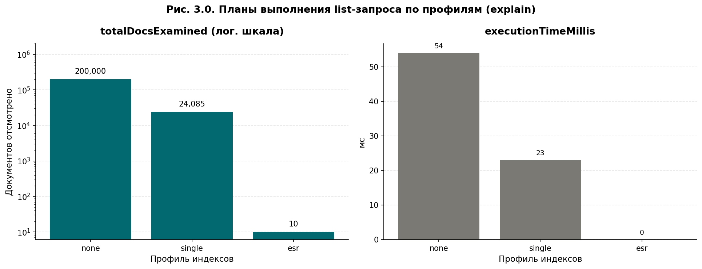
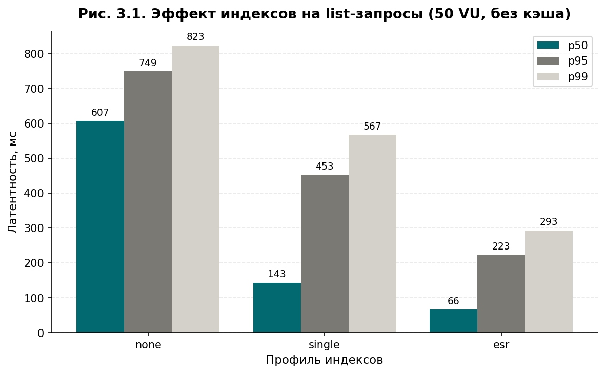
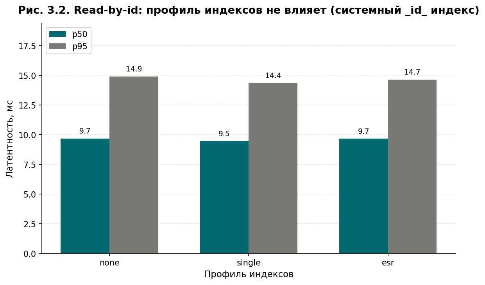
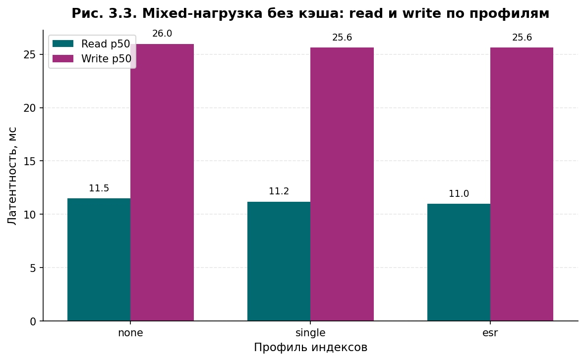
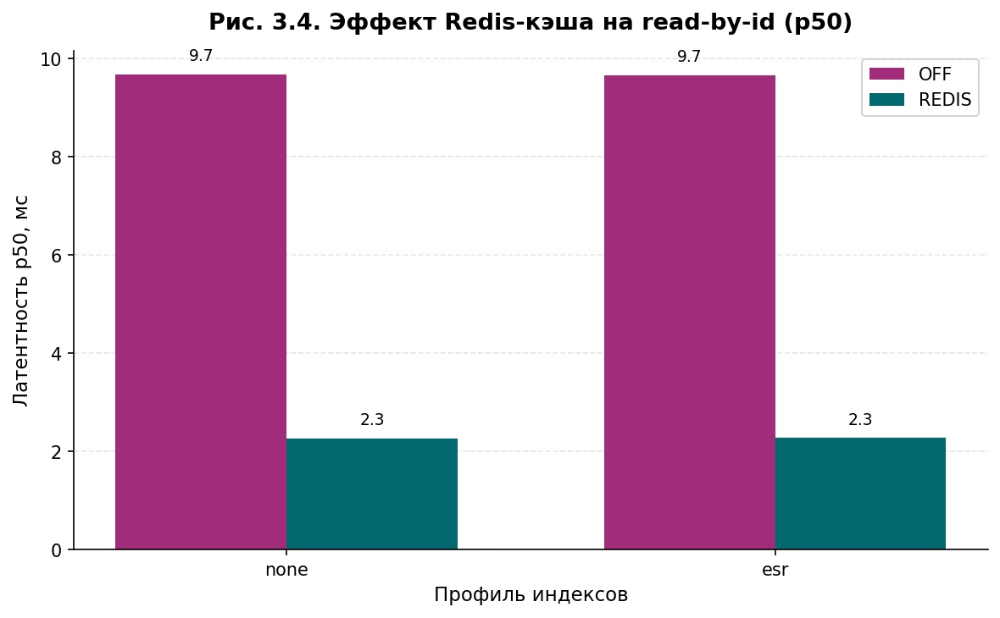
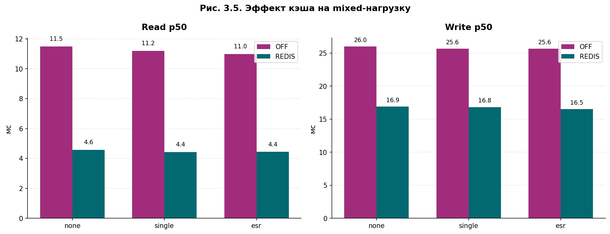
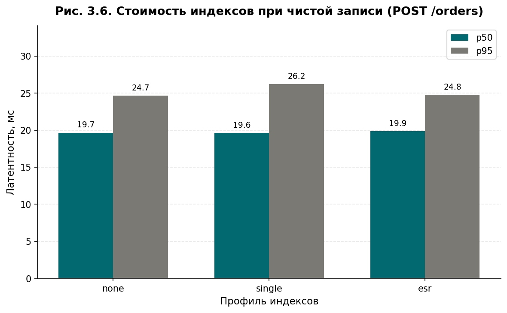
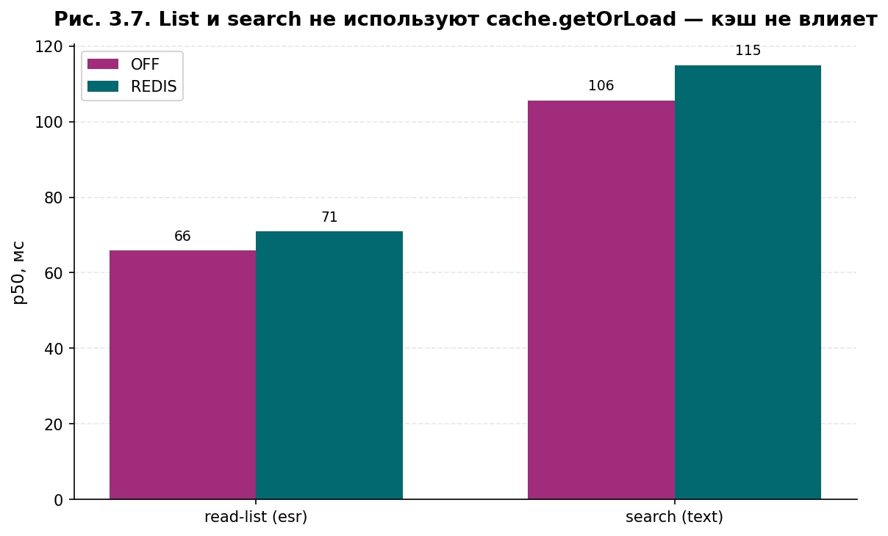
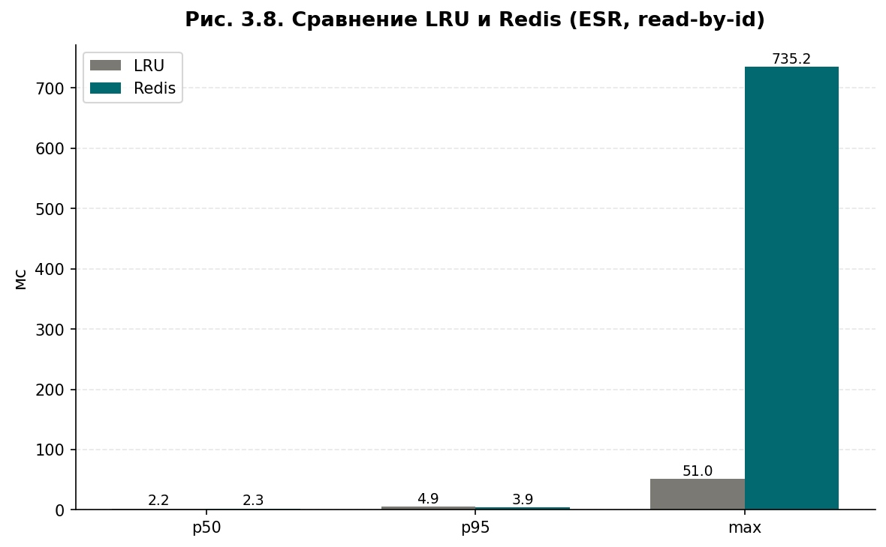
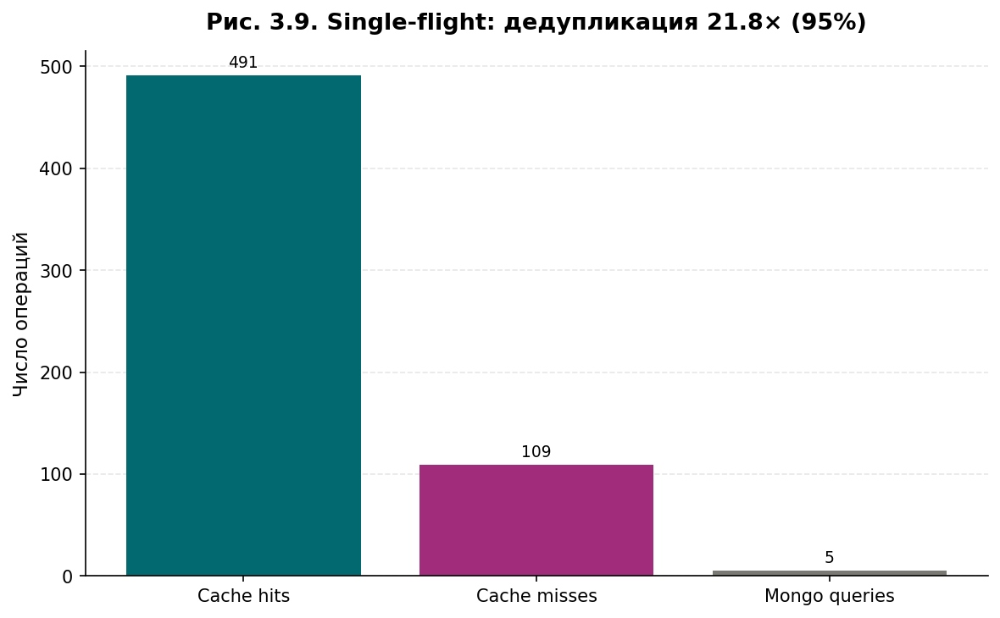

Исследование и оптимизация производительности Node.js-приложений
Сравнительный анализ стратегий кэширования и индексирования
22 эксперимента
Полная матрица: 4 типа сценариев × 4 индексных профиля × 2 состояния кэша. Каждый эксперимент — 30 секунд под нагрузкой 50 виртуальных пользователей.
| Сценарий | Индекс | Кэш | p50, мс | p95, мс | RPS | Hit rate | Запросов |
|---|---|---|---|---|---|---|---|
| Загрузка данных... | |||||||
Графики результатов
Все графики собраны из реальных выходов стенда и используются в тексте выпускной работы.

Показывает реальные параметры выполнения запроса MongoDB для трёх профилей: без индексов (none), с простыми индексами (single) и с составным ESR-индексом. База данных сама рассказывает, сколько документов в реальности просматривает и за сколько миллисекунд.
Вывод. Без индексов просматривается все 200 000 документов, с ESR-индексом — всего 10. Это объективное подтверждение того, что все последующие измерения латентности отражают реальную работу индексов, а не случайные флуктуации.

Латентность запроса к списку товаров с фильтрами по категории, рейтингу и цене под нагрузкой 50 VU без кэша. Столбцы — медиана (p50), 95-й и 99-й перцентили.
Вывод. Переход от полного скана к ESR-индексу ускоряет запрос в 9 раз по медиане и в 2,8 раза по p99. Простые индексы дают только частичный эффект — важен именно составной индекс под форму запроса.

Латентность точечного чтения GET /products/:id по трём профилям индексов. Кэш выключен, все запросы идут в базу.
Вывод. Различия между профилями меньше 2% — это статистический шум. Чтение по _id обслуживается системным индексом MongoDB в любом случае. Чтобы ускорять такие запросы, нужен инструмент с другого уровня — кэш (рис. 3.4).

Профиль 95% чтений и 5% записей — имитация реального интернет-магазина. Столбцы — латентность чтений и записей отдельно по трём профилям индексов.
Вывод. Без кэша все варианты дают похожие результаты. Основная нагрузка в этом сценарии — это чтения по _id, а индексы на них не влияют (рис. 3.2). Но высокая латентность записей выдаёт «скрытую» нагрузку — внутри записей есть несколько валидационных чтений, которые тоже идут в базу.

Сравнение латентности GET /products/:id без кэша (OFF) и с включённым Redis. Пары рядом показывают этот эффект для разных профилей индексов.
Вывод. Redis ускоряет чтение в 4 раза — с 9,7 до 2,3 мс по медиане. И этот выигрыш не зависит от индекса: при попадании в кэш запрос вообще не доходит до MongoDB. Это подтверждает вывод: индексы и кэш работают на разных классах запросов.

Тот же mixed-сценарий (95% чтений + 5% записей), но с включённым Redis. Отдельно показана латентность чтений и записей.
Вывод. Кэш ускоряет не только чтения, но и записи — с 26 до 17 мс по медиане. Это неожиданный положительный эффект: внутри POST /orders выполняются валидационные чтения пользователя и товаров, которые тоже обслуживаются кэшем.

Латентность POST /orders в сценарии только запись, по трём профилям индексов. Цель — проверить распространённый миф, что индексы «дорого стоят» при записи в MongoDB.
Вывод. Разница между всеми тремя профилями меньше 1%. Стоимость индексов при реальной транзакционной записи (инсерт + валидации + инвалидация кэша) практически нулевая. Миф разрушен.

Латентность list и search-запросов с выключенным и включенным Redis. Повышенная латентность при включенном Redis объясняется тем, что результат всё равно идёт в базу — эти запросы не кэшируются.
Вывод. Кэш по параметрам (категория, фильтр, страница) сложнее в реализации из-за инвалидации. Для list и search-запросов фундаментальный инструмент ускорения — именно составные индексы, а не кэш.

Сравнение двух реализаций кэша на одном и том же сценарии (ESR-индекс, read-by-id): внутрипроцессный LRU и внешний Redis. Показаны p50, p95 и максимум.
Вывод. LRU немного быстрее по медиане из-за отсутствия сетевого вызова, но имеет выброс 735 мс по максимуму (блокировки event loop). Redis стабильнее и работает в multi-instance. Для one-shot-сервера — LRU, для масштабируемых — Redis.

Микроэксперимент по Cache Stampede: 100 одновременных запросов к одному популярному ключу в момент истечения TTL. Показаны: попадания в кэш (cache hits), промахи кэша (misses) и реальные запросы в MongoDB.
Вывод. Из 600 HTTP-запросов в базу дошли только 5 — это дедупликация в 21,8 раз и эффективность 95,4%. Остальные 109 промахов «подписались» на результат одного из 5 запросов через механизм inFlight. База защищена от каскадного падения.
Защита от лавины запросов
Когда срок жизни популярного ключа истекает у сотни одновременных запросов, все они устремляются в базу. Защита single-flight дедуплицирует промахи: первый запрос идёт в базу, остальные ждут его результат.
// Single-flight: дедупликация одновременных промахов одного ключа
private readonly inFlight = new Map<string, Promise<unknown>>();
async getOrLoad<T>(key: string, ttlSeconds: number, loader: () => Promise<T>) {
// 1. Проверяем кэш
const cached = await this.get<T>(key);
if (cached !== null) return cached;
// 2. Если уже идёт загрузка — ждём её результат
const existing = this.inFlight.get(key);
if (existing !== undefined) return existing as Promise<T>;
// 3. Запускаем единственный реальный запрос
const promise = (async () => {
try {
const value = await loader();
if (value !== null) await this.set(key, value, ttlSeconds);
return value;
} finally {
this.inFlight.delete(key); // 4. После завершения — снимаем замок
}
})();
this.inFlight.set(key, promise);
return promise;
}Параметры эксперимента
Тестовый стенд
- Платформа: Node.js 25 + TypeScript
- Веб-фреймворк: Fastify 5.8
- База данных: MongoDB 7.0
- Кэш: Redis 7.2 + lru-cache 11.4
- Метрики: Prometheus client
- Нагрузка: Grafana k6
- Изоляция: Docker Compose
Среда испытаний
- CPU: Intel Core i7-12700KF
- RAM: 16 ГБ
- OS: Linux WSL2
- Docker: 29.4.3
- Node.js: 25.9.0
- MongoDB: 7.0.34
- Всего прогонов: 22
Тестовые данные
- Товары: 200 000
- Пользователи: 50 000
- Заказы: 100 000
- Категории: 5 (электроника, одежда, книги, дом, спорт)
- Распределение запросов: Парето 80/20
- Воспроизводимость: фиксированный seed
Параметры прогонов
- Длительность: 30 секунд под нагрузкой
- Прогрев: 15–30 секунд
- Виртуальные пользователи: 50 (для лавины — 100)
- Метрика: after − afterWarmup (чистый интервал)
- Снимки состояния: before, afterWarmup, after
Что измеряем
- p50, p95, p99: квантили времени ответа
- RPS: запросов в секунду
- http_req_failed: доля ошибок
- cache hits/misses: попадания в кэш
- mongo queries: реальные обращения в базу